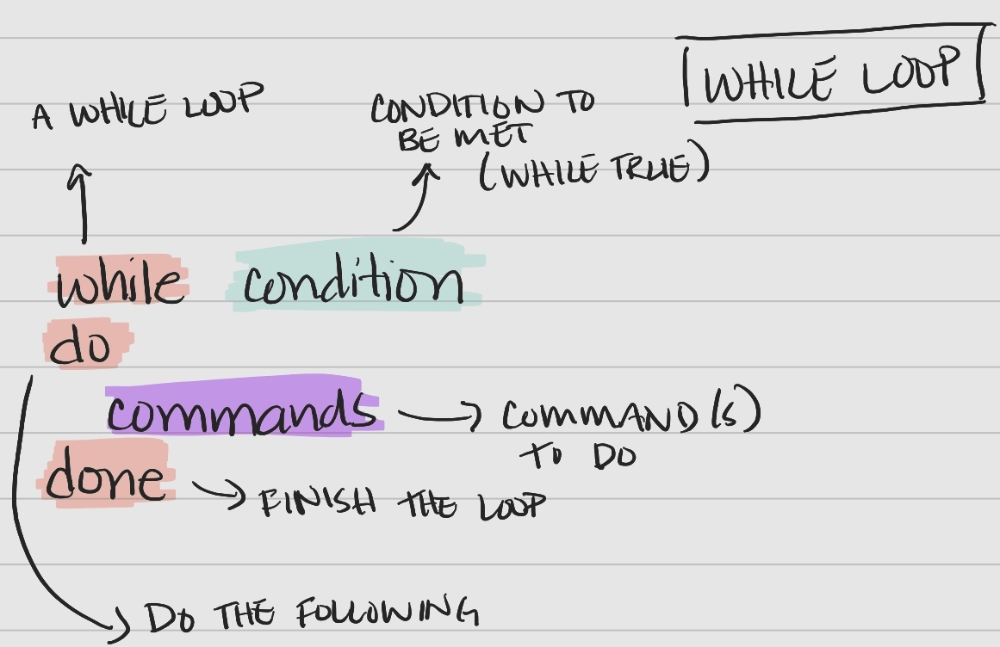

Variables and Loops
Storing and Using Values – Variables
Values can be temporarily stored into items called variables. This is very useful in looping and scripting, particularly when we may not know or be able to keep track of values.
Interestingly, we use diffent syntax when assigning/unsetting and using variables.
setting variables – use
variable=valueusing variables – use
$variableunsetting variables – use
unset variable#create a variable named file_type and assign it a value of fastq file_type="fastq" #call the file_type variable, print it to the screen echo "the value after setting:" $file_type #unset (or remove) the variable assignment unset file_type #check for the value of file_type echo "the value after unsetting:" $file_typethe value after setting: fastq the value after unsetting:
- When setting, no spaces around the
=–variable = valuewill not do what we want. - Using quotes when calling variables prevents weird issues –
command "$variable"prevents issues when variable values have spaces, etc. - Command output can be stored using
$()–variable=$(command x)stores the output ofcommand xasvariable. - Suffixes can be added by using
${variable}–"${file_type}1"from above would befastq1
Variables – Checking Understanding
Q&A: Which of the following correctly assigns the value of fastq to a variable named file_suffix?
fastq=$file_suffixfastq = $file_suffixfastq=file_suffixfile_suffix=fastqfile_suffix=$fastq
Q&A: Which of the following correctly assigns the value of trt to a variable named var1?
Correct order, spacing and quotes/brackets
var1=${trt}var1 =trtvar1=trtvar1=$trtvar1="trt"
Q&A: How can I save the value of the directory that I am in, as a variable named start_dir?
Q&A: What would the value of out_var=$"(ls)" be?
Q&A: What would the final output be after running the following in a terminal?
base1="sampleX"
ext1=.txt
name1=$file1${ext1}
echo "${name1}"Q&A: What would the final output be after running the following in a terminal?
base1="sampleX"
ext1=.txt
name1=$base1$"ext1"
echo $name1Q&A: What would the final output be after running the following in a terminal?
base1="sampleX"
ext1=.txt
name1=$base1"${ext1}"
echo $name1Q&A: What would the final output be after running the following in a terminal?
base1="sampleX"
ext1=.txt
name1=$base1"${ext1}"
unset $name1
echo $name1Q&A: What would the final output be after running the following in a terminal?
base1="sampleX"
ext1=.txt
name1=$base1"${ext1}"
unset name1
echo $name1".otherstuff"Use Case
Let’s see how we can use variables, combined with previous commands/methods in a quick analysis.
From the example.gtf file (downloaded and used in the previous lesson), which chromosome has the highest number of genes? What about exons?
A reminder, the initial structure is below, with the chromosome name in the first field, and the feature type in the third field.
# cd to ~/Desktop/shell-lesson-data
cd ~/Desktop/shell-lesson-data
# view first few lines of the file
head example.gtf#!genome-build CNA3
#!genome-version CNA3
#!genome-date 2015-11
#!genome-build-accession GCA_000149245.3
#!genebuild-last-updated 2015-11
1 ena gene 100 5645 . - . gene_id "CNAG_04548"; gene_source "ena"; gene_biotype "protein_coding";
1 ena transcript 100 5645 . - . gene_id "CNAG_04548"; transcript_id "AFR92135"; gene_source "ena"; gene_biotype "protein_coding"; transcript_source "ena"; transcript_biotype "protein_coding";
1 ena exon 5494 5645 . - . gene_id "CNAG_04548"; transcript_id "AFR92135"; exon_number "1"; gene_source "ena"; gene_biotype "protein_coding"; transcript_source "ena"; transcript_biotype "protein_coding"; exon_id "AFR92135-1";
1 ena CDS 5494 5645 . - 0 gene_id "CNAG_04548"; transcript_id "AFR92135"; exon_number "1"; gene_source "ena"; gene_biotype "protein_coding"; transcript_source "ena"; transcript_biotype "protein_coding"; protein_id "AFR92135"; protein_version "1";
1 ena start_codon 5643 5645 . - 0 gene_id "CNAG_04548"; transcript_id "AFR92135"; exon_number "1"; gene_source "ena"; gene_biotype "protein_coding"; transcript_source "ena"; transcript_biotype "protein_coding";From last time, we remember that we need to remove the leading lines of the file to make it easier to work with, using grep -v '^#', then we can cut the fields that we need, sort and count the total genes with sort | uniq -c | grep 'gene'. This gives us the following output.
# cd to directory
cd ~/Desktop/shell-lesson-data
# print the file to the screen to pipe it into grep
# remove the lines with #! because they'll get in the way
# cut to keep the first and third columns (chromosome, biotype)
# sort values
# keep unique values, specifying counts of each unique value to get totals of biotypes by chromosome
# pull out gene biotype totals
cat example.gtf | grep -v '^#' | cut -f1,3 | sort | uniq -c | grep 'gene'1033 1 gene
474 10 gene
663 11 gene
326 12 gene
322 13 gene
417 14 gene
706 2 gene
725 3 gene
503 4 gene
812 5 gene
640 6 gene
641 7 gene
639 8 gene
554 9 gene
42 Mt geneWe’re not quite there yet. Let’s capture the output as a variable, named chr_n, to use for later.
Note: We’re introducing awk here, a language the is quite useful in parsing text, to print out the second column $2.
# cd to directory
cd ~/Desktop/shell-lesson-data
# print the file to the screen to pipe it into grep
# remove the lines with #! because they'll get in the way
# cut to keep the first and third columns (chromosome, biotype)
# sort values
# keep unique values, specifying counts of each unique value to get totals of biotypes by chromosome
# pull out gene biotype totals
# grab the first line
# use awk to print the 2nd column
biotype_gene="gene"
biotype_exon="exon"
chr_n_gene=$(cat example.gtf | grep -v '^#' | cut -f1,3 | sort | uniq -c | grep $biotype_gene | head -n 1 | awk '{print $2;}')
chr_n_exon=$(cat example.gtf | grep -v '^#' | cut -f1,3 | sort | uniq -c | grep $biotype_exon | head -n 1 | awk '{print $2;}')
echo "The chromosome with the most "$biotype_gene" is: "$chr_n_gene
echo "The chromosome with the most "$biotype_exon" is: "$chr_n_exonThe chromosome with the most gene is: 1
The chromosome with the most exon is: 1The option to capture values and use them in further commands is really evident when we get into loops.
Performing Actions, Repetitively
Loops allow us to perform a command (or set of commands) on each item in a list.
For Loop Syntax
Bash for loops follow a specific syntax.

Key components of the syntax
- keywords
for,in,do,done– tell bash when portions of the loop are coming item– a variable that holds the value of an item from the list for an iteration of the looplist– a set of items (list or array) to iterate overcommands– the command(s) performed with each item in the list or array
Let’s work through an example from our sample data in ~/Desktop/shell-lesson-data/exercise-data/creatures, by printing out the first two lines of each file.
Walking through the 4 lines, line-by-line.
- The keyword
fortells the computer we are entering a loop. - A variable named
filenameis created, which is initially empty. - The keyword
intells the computer to create an empty list. basilisk.dat,minotour.dat, andunicorn.datare added to the list.
- The keyword
dotells the computer to listen for the following commands perform on each item in the list.
- The computer the commands to perform on the value held by the variable
$filename.
In the example above, there are 3 iterations of the loop. Notice how the value of filename changes with each iteration.
| Iteration | filename |
list |
|---|---|---|
| 1 | basilisk.dat |
basilisk.dat minotaur.dat unicorn.dat |
| 2 | minotaur.dat |
basilisk.dat minotaur.dat unicorn.dat |
| 3 | unicorn.dat |
basilisk.dat minotaur.dat unicorn.dat |
The variable could be named anything – in the example above, we can say
for x in basilisk.dat minotaur.dat unicorn.dat instead.
While Loop Syntax
A while loop is another useful type of loop in bash and follows a specific syntax.

Key components of the syntax
- keywords
while,do,done– tell bash when portions of the loop are coming condition– a condition to be met for the loop to continue (“while true”)commands– the command(s) performed with each item in the list or array
Let’s see an example where we print out numbers less than or equal to 7 (-le).
Note: We can increment num by 1 each time by reassigning the value of num, num=$(($num+1)).
num=1
while [ $num -le 7 ]
do
echo $num" is less than or equal to 7."
num=$(($num+1))
done1 is less than or equal to 7.
2 is less than or equal to 7.
3 is less than or equal to 7.
4 is less than or equal to 7.
5 is less than or equal to 7.
6 is less than or equal to 7.
7 is less than or equal to 7.Using Variables in Loops
Let’s return to our earlier example with the gtf file. Using a loop, we can now identify the chromosomes with the most of several biotypes.
# cd to directory
cd ~/Desktop/shell-lesson-data
for bt in gene exon transcript CDS start_codon
do
chr_n=$(cat example.gtf | grep -v '^#' | cut -f1,3 | sort | uniq -c | grep $bt | head -n 1 | awk '{print $2;}')
echo "The chromosome with the most "$bt" is: "$chr_n
doneThe chromosome with the most gene is: 1
The chromosome with the most exon is: 1
The chromosome with the most transcript is: 1
The chromosome with the most CDS is: 1
The chromosome with the most start_codon is: 1We can take this futher and capture all of the types of biotypes as an array to pass to the loop as a variable.
Note: An item at position x in an array can be accessed via array[x]. In a loop, we use ${array[@]} to access the item.
# cd to directory
cd ~/Desktop/shell-lesson-data
# capture the types of biotypes as an array
btype_array=$(cat example.gtf | grep -v '^#' | cut -f3 | sort | uniq)
for bt in ${btype_array[@]}
do
chr_n=$(cat example.gtf | grep -v '^#' | cut -f1,3 | sort | uniq -c | grep $bt | head -n 1 | awk '{print $2;}')
echo "The chromosome with the most "$bt" is: "$chr_n
doneThe chromosome with the most CDS is: 1
The chromosome with the most exon is: 1
The chromosome with the most five_prime_utr is: 1
The chromosome with the most gene is: 1
The chromosome with the most start_codon is: 1
The chromosome with the most stop_codon is: 1
The chromosome with the most three_prime_utr is: 1
The chromosome with the most transcript is: 1Loops – Checking Understanding
Q&A: Write a loop that would print out the months of the year. Create an array that holds the months.
Q&A: Look at the following code and output.
$ ls
cubane.pdb ethane.pdb methane.pdb octane.pdb pentane.pdb propane.pdbWhat would be the output of the following code?
$ for filename in c*
do
ls $filename
doneHopefully you’ve seen how helpful variables and loops can be. Next, we’ll put things together with bash scripts.